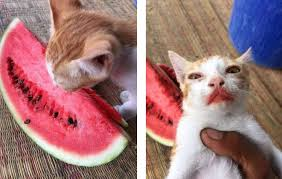

Котики любят арбузы
Можно ли давать кошке арбуз или дыню? Да, эти фрукты можно предлагать питомцам в небольших количествах как редкое лакомство, предварительно очистив от кожуры и семян.
Кошки любят арбуз. Им нравится вкус, запах, ощущение и звук. Арбузы — одни из самых популярных фруктов для кошек, потому что они сладкие и сочные, а кошки не могут от них оторваться!

Опубликована: 17 февраля 2026 г.